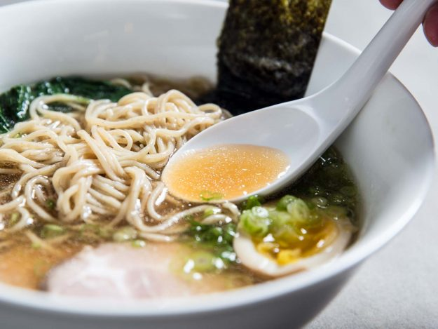

|  | Este ramen con sabor a salsa de soya presenta un caldo claro que obtiene su fuerza de un aceite con aroma de ajo y jengibre. Fideos de ramen agradablemente hinchables y carne de cerdo crujiente completan el rico plato de sopa. Puede que no sea rápido o fácil, pero también te dejará con todo lo que necesitas para un lote de seguimiento del clásico chintan shoyu ramen. Confía en nosotros, vale la pena. | |||||
|---|---|---|---|---|---|---|
| Este ramen de mariscos negro azabache está hecho con espagueti de tinta de calamar cocido en bicarbonato de sodio y cubierto con muchas golosinas directamente del océano: calamares, mejillones y huevas de salmón. El caldo es muy simple: solo caldo de pollo y pasta de miso. Si usa caldo de pollo comprado en la tienda, agregue algunos paquetes de gelatina sin sabor para enriquecerlo. | ||||||
| El caldo de pollo cremoso forma la base de este increíblemente complejo cuenco de ramen, que está cubierto con miso y funky polvo de pescado seco. La sopa termina con un huevo cocido marinado (receta a continuación), cebolla blanca finamente picada, cebolleta en rodajas y lima. | ||||||
| El ramen no tiene que ser un plato caliente: en el hiyaski chuka, los fideos se sirven fríos en un aderezo de vinagre hecho con salsa de soja, aceite de sésamo, vinagre de arroz, azúcar y jengibre rallado. Las posibles combinaciones de cobertura son ilimitadas, pero para algo tradicional, pruebe los camarones escalfados, el jamón rebanado y las verduras frescas. | ||||||
| Hacer ramen tradicional toma todo el día; si estás ansiando fideos y los quieres rápido, esta es tu mejor opción. Este ramen de estilo coreano obtiene mucho sabor rápidamente de kimchi, champiñones, miso y salsa de soja. | ||||||